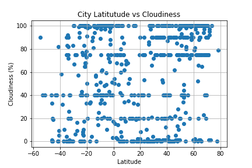

City Latitude vs Cloudiness
Utlizing OpenWeatherMap's API weather from a random set of >500 cities were compared in their latitudes with cloudiness. The data is plotted below, and no conclusive trends can be drawn from the data of purely latitude vs cloudiness. Future analysis could involve elevation and topographical data vs cloudiness.
